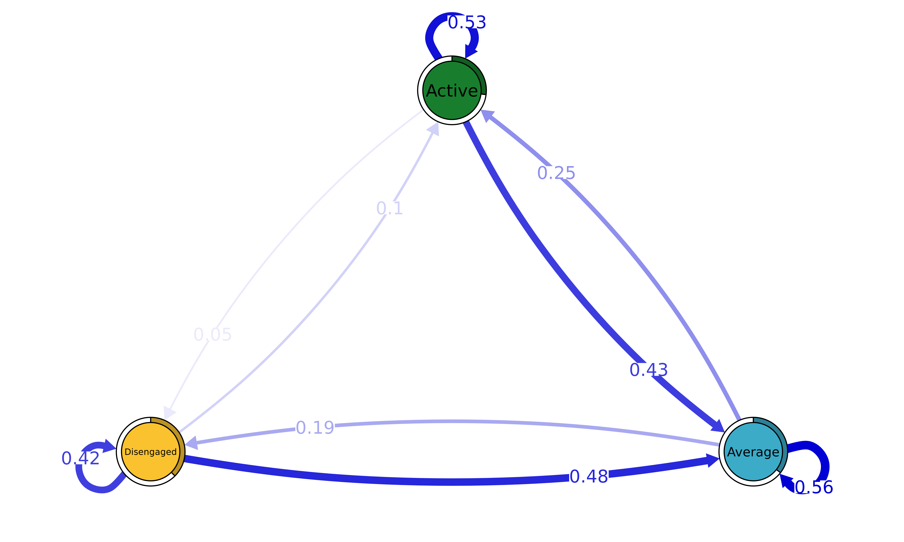
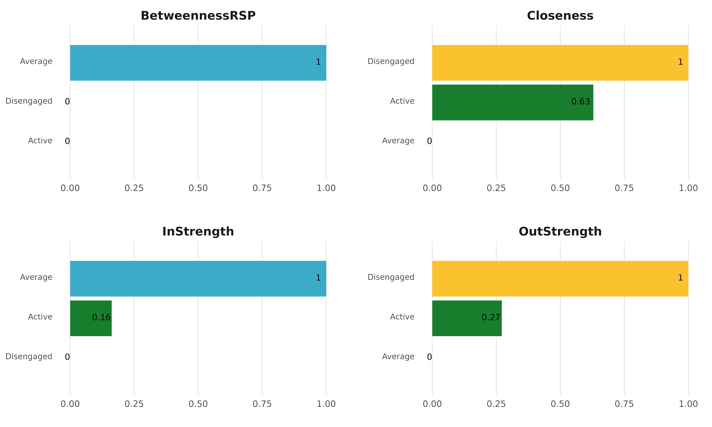

This vignette showcases some basic usage of the tna
package. First we load the package that we will use for this
example.
We also load the engagement data available in the
package (see ?engagement for further information)
data("engagement", package = "tna")We build a TNA model using this data with the tna()
function .
tna_model <- tna(engagement)To visualize the model, we can use the standard plot()
function.
plot(tna_model)
The initial state probabilities are
data.frame(`Initial prob.` = tna_model$inits, check.names = FALSE) |>
rownames_to_column("Engagement state") |>
arrange(desc(`Initial prob.`)) |>
gt() |>
fmt_percent()| Engagement state | Initial prob. |
|---|---|
| Disengaged | 37.50% |
| Average | 35.50% |
| Active | 27.00% |
and the transitions probabilities are
tna_model$weights |>
data.frame() |>
rownames_to_column("From\\To") |>
gt() |>
fmt_percent()| From\To | Active | Average | Disengaged |
|---|---|---|---|
| Active | 52.52% | 42.79% | 4.69% |
| Average | 24.67% | 56.33% | 19.00% |
| Disengaged | 9.87% | 47.82% | 42.31% |
The function centralities() can be used to compute
various centrality measures (see ?centralities for more
information). These measures can also be visualized with the
plot() function.
centrality_measures <- c("BetweennessRSP", "Closeness", "InStrength", "OutStrength")
cents_withoutloops <- centralities(
tna_model,
measures = centrality_measures,
loops = FALSE,
normalize = TRUE
)
plot(cents_withoutloops, ncol = 2, model = tna_model)